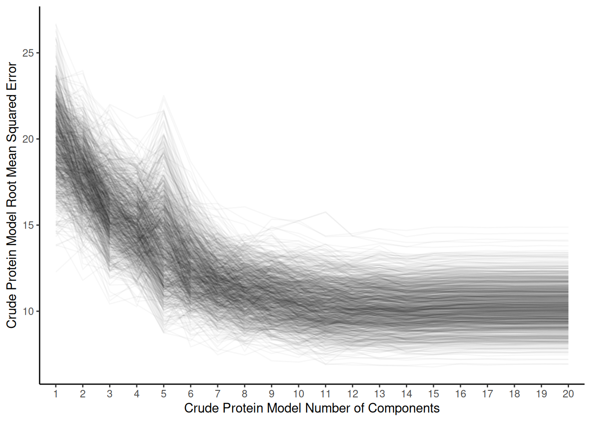
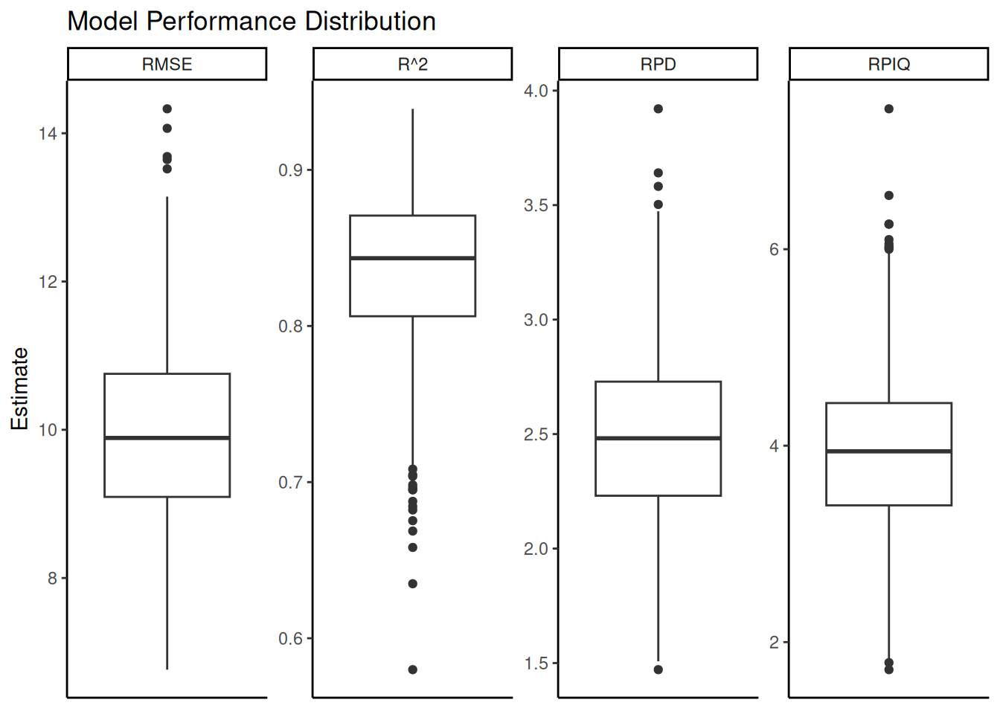
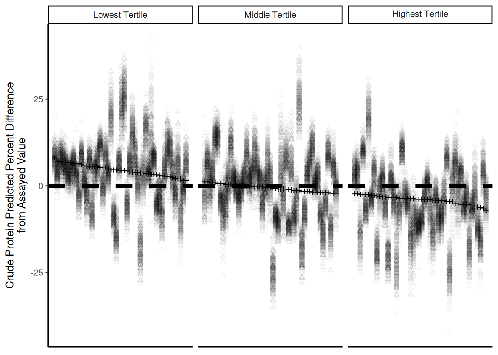

<!DOCTYPE html>
<html xmlns="http://www.w3.org/1999/xhtml" lang="en" xml:lang="en"><head>

<meta charset="utf-8">
<meta name="generator" content="quarto-1.4.551">

<meta name="viewport" content="width=device-width, initial-scale=1.0, user-scalable=yes">

<meta name="author" content="Ryan V. Crawford">
<meta name="author" content="Jamie L. Crawford">
<meta name="author" content="Julie L. Hansen">
<meta name="author" content="Lawrence B. Smart">
<meta name="author" content="Virginia M. Moore">
<meta name="dcterms.date" content="2025-07-02">
<meta name="keywords" content="Hemp, Grain, Spectroscopy">

<title>Near Infrared Spectroscopy Predicts Crude Protein Concentration in Hemp Grain</title>
<style>
code{white-space: pre-wrap;}
span.smallcaps{font-variant: small-caps;}
div.columns{display: flex; gap: min(4vw, 1.5em);}
div.column{flex: auto; overflow-x: auto;}
div.hanging-indent{margin-left: 1.5em; text-indent: -1.5em;}
ul.task-list{list-style: none;}
ul.task-list li input[type="checkbox"] {
  width: 0.8em;
  margin: 0 0.8em 0.2em -1em; /* quarto-specific, see https://github.com/quarto-dev/quarto-cli/issues/4556 */ 
  vertical-align: middle;
}
/* CSS for citations */
div.csl-bib-body { }
div.csl-entry {
  clear: both;
  margin-bottom: 0em;
}
.hanging-indent div.csl-entry {
  margin-left:2em;
  text-indent:-2em;
}
div.csl-left-margin {
  min-width:2em;
  float:left;
}
div.csl-right-inline {
  margin-left:2em;
  padding-left:1em;
}
div.csl-indent {
  margin-left: 2em;
}</style>


<script src="site_libs/quarto-nav/quarto-nav.js"></script>
<script src="site_libs/clipboard/clipboard.min.js"></script>
<script src="site_libs/quarto-search/autocomplete.umd.js"></script>
<script src="site_libs/quarto-search/fuse.min.js"></script>
<script src="site_libs/quarto-search/quarto-search.js"></script>
<meta name="quarto:offset" content="./">
<script src="site_libs/quarto-html/quarto.js"></script>
<script src="site_libs/quarto-html/popper.min.js"></script>
<script src="site_libs/quarto-html/tippy.umd.min.js"></script>
<script src="site_libs/quarto-html/anchor.min.js"></script>
<link href="site_libs/quarto-html/tippy.css" rel="stylesheet">
<link href="site_libs/quarto-html/quarto-syntax-highlighting.css" rel="stylesheet" id="quarto-text-highlighting-styles">
<script src="site_libs/bootstrap/bootstrap.min.js"></script>
<link href="site_libs/bootstrap/bootstrap-icons.css" rel="stylesheet">
<link href="site_libs/bootstrap/bootstrap.min.css" rel="stylesheet" id="quarto-bootstrap" data-mode="light">
<script id="quarto-search-options" type="application/json">{
  "location": "sidebar",
  "copy-button": false,
  "collapse-after": 3,
  "panel-placement": "start",
  "type": "textbox",
  "limit": 50,
  "keyboard-shortcut": [
    "f",
    "/",
    "s"
  ],
  "show-item-context": false,
  "language": {
    "search-no-results-text": "No results",
    "search-matching-documents-text": "matching documents",
    "search-copy-link-title": "Copy link to search",
    "search-hide-matches-text": "Hide additional matches",
    "search-more-match-text": "more match in this document",
    "search-more-matches-text": "more matches in this document",
    "search-clear-button-title": "Clear",
    "search-text-placeholder": "",
    "search-detached-cancel-button-title": "Cancel",
    "search-submit-button-title": "Submit",
    "search-label": "Search"
  }
}</script>

  <script src="https://polyfill.io/v3/polyfill.min.js?features=es6"></script>
  <script src="https://cdn.jsdelivr.net/npm/mathjax@3/es5/tex-chtml-full.js" type="text/javascript"></script>

<script type="text/javascript">
const typesetMath = (el) => {
  if (window.MathJax) {
    // MathJax Typeset
    window.MathJax.typeset([el]);
  } else if (window.katex) {
    // KaTeX Render
    var mathElements = el.getElementsByClassName("math");
    var macros = [];
    for (var i = 0; i < mathElements.length; i++) {
      var texText = mathElements[i].firstChild;
      if (mathElements[i].tagName == "SPAN") {
        window.katex.render(texText.data, mathElements[i], {
          displayMode: mathElements[i].classList.contains('display'),
          throwOnError: false,
          macros: macros,
          fleqn: false
        });
      }
    }
  }
}
window.Quarto = {
  typesetMath
};
</script>

</head>

<body>

<div id="quarto-search-results"></div>
<!-- content -->
<div id="quarto-content" class="quarto-container page-columns page-rows-contents page-layout-article">
<!-- sidebar -->
<!-- margin-sidebar -->
    <div id="quarto-margin-sidebar" class="sidebar margin-sidebar">
        <nav id="TOC" role="doc-toc" class="toc-active">
    <h2 id="toc-title">On this page</h2>
   
  <ul>
  <li><a href="#introduction" id="toc-introduction" class="nav-link active" data-scroll-target="#introduction"><span class="header-section-number">1</span> INTRODUCTION</a></li>
  <li><a href="#materials-and-methods" id="toc-materials-and-methods" class="nav-link" data-scroll-target="#materials-and-methods"><span class="header-section-number">2</span> MATERIALS AND METHODS</a>
  <ul class="collapse">
  <li><a href="#hemp-grain-sample-background" id="toc-hemp-grain-sample-background" class="nav-link" data-scroll-target="#hemp-grain-sample-background"><span class="header-section-number">2.1</span> Hemp Grain Sample Background</a></li>
  <li><a href="#spectral-data-collection-and-preprocessing" id="toc-spectral-data-collection-and-preprocessing" class="nav-link" data-scroll-target="#spectral-data-collection-and-preprocessing"><span class="header-section-number">2.2</span> Spectral Data Collection and Preprocessing</a></li>
  <li><a href="#laboratory-validation" id="toc-laboratory-validation" class="nav-link" data-scroll-target="#laboratory-validation"><span class="header-section-number">2.3</span> Laboratory Validation</a></li>
  <li><a href="#r-software-and-packages-used" id="toc-r-software-and-packages-used" class="nav-link" data-scroll-target="#r-software-and-packages-used"><span class="header-section-number">2.4</span> R software and packages used</a></li>
  <li><a href="#model-development" id="toc-model-development" class="nav-link" data-scroll-target="#model-development"><span class="header-section-number">2.5</span> Model Development</a></li>
  </ul></li>
  <li><a href="#results-and-discussion" id="toc-results-and-discussion" class="nav-link" data-scroll-target="#results-and-discussion"><span class="header-section-number">3</span> RESULTS AND DISCUSSION</a>
  <ul class="collapse">
  <li><a href="#laboratory-assay-cp-values" id="toc-laboratory-assay-cp-values" class="nav-link" data-scroll-target="#laboratory-assay-cp-values"><span class="header-section-number">3.1</span> Laboratory assay CP values</a></li>
  <li><a href="#preprocessing-methods-comparison" id="toc-preprocessing-methods-comparison" class="nav-link" data-scroll-target="#preprocessing-methods-comparison"><span class="header-section-number">3.2</span> Preprocessing methods comparison</a></li>
  <li><a href="#preprocessing-methods-comparison-1" id="toc-preprocessing-methods-comparison-1" class="nav-link" data-scroll-target="#preprocessing-methods-comparison-1"><span class="header-section-number">3.3</span> Preprocessing methods comparison</a></li>
  </ul></li>
  <li><a href="#algorithm-comparison" id="toc-algorithm-comparison" class="nav-link" data-scroll-target="#algorithm-comparison"><span class="header-section-number">4</span> Algorithm comparison</a></li>
  <li><a href="#final-model-development-and-summary" id="toc-final-model-development-and-summary" class="nav-link" data-scroll-target="#final-model-development-and-summary"><span class="header-section-number">5</span> Final model development and summary</a></li>
  <li><a href="#protein-focused-model-validation" id="toc-protein-focused-model-validation" class="nav-link" data-scroll-target="#protein-focused-model-validation"><span class="header-section-number">6</span> Protein-Focused Model Validation</a>
  <ul class="collapse">
  <li><a href="#breeding-applications-and-genetic-improvement" id="toc-breeding-applications-and-genetic-improvement" class="nav-link" data-scroll-target="#breeding-applications-and-genetic-improvement"><span class="header-section-number">6.1</span> Breeding Applications and Genetic Improvement</a></li>
  </ul></li>
  <li><a href="#acknowledgments" id="toc-acknowledgments" class="nav-link" data-scroll-target="#acknowledgments"><span class="header-section-number">7</span> ACKNOWLEDGMENTS</a></li>
  <li><a href="#conflict-of-interest" id="toc-conflict-of-interest" class="nav-link" data-scroll-target="#conflict-of-interest"><span class="header-section-number">8</span> CONFLICT OF INTEREST</a></li>
  </ul>
</nav>
    </div>
<!-- main -->
<main class="content" id="quarto-document-content">

<header id="title-block-header">
<h1 class="title display-7">Near Infrared Spectroscopy Predicts Crude Protein Concentration in Hemp Grain</h1>
<p class="author">Ryan V. Crawford</p>
<p class="author">Jamie L. Crawford</p>
<p class="author">Julie L. Hansen</p>
<p class="author">Lawrence B. Smart</p>
<p class="author">Virginia M. Moore</p>

<p class="date">2025-07-02</p>
<div class="abstract">
<div class="abstract-title">Abstract</div>
<p>The protein concentration of hemp (<em>Cannabis sativa</em> L.) grain is of interest to researchers, producers, and consumers. This study was conducted to determine whether hemp grain can be non-destructively assayed for crude protein (CP) concentration using spectra obtained from near-infrared spectroscopy (NIRS) to build a prediction model for crude protein concentration using partial least squares regression (PLSR). One hundred and fourty-nine whole hemp grain samples were obtained from 18 cultivar trials in New York (NY) from 2017-2021. The samples’ NIRS spectra were collected and the samples were ground and assayed by combustion. Seven potential preprocessing methods, as well as untransformed spectra, were tested using 100 training and testing set splits of the data and the best method was selected. That method was applied to 1000 additional splits of the data set. Model fit was evaluated using RMSE, R<sup>2</sup>, relative predicted deviation (RPD), and ratio of performance to interquartile distance (RPIQ). Once a preprocessing method was selected, the optimal number of model components and prediction performance on the testing sets were examined. A preprocessing method consisting of the standard normal variate transformation following a Savitzky-Golay filter had the lowest RMSE and the highest R<sup>2</sup>, RPD and RPIQ, with RPD and RPIQ 2.1%, and 2.4% higher than a Savitzky-Golay filter by itself (significant at <span class="math inline">\(\alpha\)</span> &lt;0.05). All preprocessing methods outperformed untransformed spectra. Optimal final models typically consisted of 12 components. Seventy-four percent of the 1000 final models had, at minimum, the ability to distinguish between high and low values of CP concentration, with 49% of the models capable of approximating quantitative prediction. The models tested to overestimate CP concentration by 0.5% in the lowest tertile of samples and underestimate CP concentration by 0.4% in the highest tertile of samples. The worst-predicted samples tended to come from Geneva, NY, possibly as a result of the models’ class imbalance (half of the samples were from Ithaca, NY while 28% were from Geneva). The research shows the promise that NIRS offers in the non-destructive assay of CP concentration in hemp grain.</p>
</div>
</header>


<div class="cell">
<div class="cell-output cell-output-stderr">
<pre><code>Loading required package: lattice</code></pre>
</div>
<div class="cell-output cell-output-stderr">
<pre><code>prospectr version 0.2.8 -- galo</code></pre>
</div>
<div class="cell-output cell-output-stderr">
<pre><code>check the package repository at: https://github.com/l-ramirez-lopez/prospectr</code></pre>
</div>
<div class="cell-output cell-output-stderr">
<pre><code>
Attaching package: 'pls'</code></pre>
</div>
<div class="cell-output cell-output-stderr">
<pre><code>The following object is masked from 'package:prospectr':

    msc</code></pre>
</div>
<div class="cell-output cell-output-stderr">
<pre><code>The following object is masked from 'package:caret':

    R2</code></pre>
</div>
<div class="cell-output cell-output-stderr">
<pre><code>The following object is masked from 'package:stats':

    loadings</code></pre>
</div>
<div class="cell-output cell-output-stderr">
<pre><code>── Attaching core tidyverse packages ──────────────────────── tidyverse 2.0.0 ──
✔ dplyr     1.1.4     ✔ readr     2.1.5
✔ forcats   1.0.0     ✔ stringr   1.5.1
✔ lubridate 1.9.4     ✔ tibble    3.2.1
✔ purrr     1.0.4     ✔ tidyr     1.3.1
── Conflicts ────────────────────────────────────────── tidyverse_conflicts() ──
✖ dplyr::between()     masks data.table::between()
✖ dplyr::filter()      masks stats::filter()
✖ dplyr::first()       masks data.table::first()
✖ lubridate::hour()    masks data.table::hour()
✖ lubridate::isoweek() masks data.table::isoweek()
✖ dplyr::lag()         masks stats::lag()
✖ dplyr::last()        masks data.table::last()
✖ purrr::lift()        masks caret::lift()
✖ lubridate::mday()    masks data.table::mday()
✖ lubridate::minute()  masks data.table::minute()
✖ lubridate::month()   masks data.table::month()
✖ lubridate::quarter() masks data.table::quarter()
✖ lubridate::second()  masks data.table::second()
✖ purrr::transpose()   masks data.table::transpose()
✖ lubridate::wday()    masks data.table::wday()
✖ lubridate::week()    masks data.table::week()
✖ lubridate::yday()    masks data.table::yday()
✖ lubridate::year()    masks data.table::year()
ℹ Use the conflicted package (&lt;http://conflicted.r-lib.org/&gt;) to force all conflicts to become errors

Attaching package: 'kableExtra'


The following object is masked from 'package:dplyr':

    group_rows</code></pre>
</div>
<div class="cell-output cell-output-stdout">
<pre><code>Simple check:</code></pre>
</div>
<div class="cell-output cell-output-stdout">
<pre><code>- Hemp data: 149 samples </code></pre>
</div>
<div class="cell-output cell-output-stdout">
<pre><code>- Best method: SNV + Savitzky-Golay </code></pre>
</div>
<div class="cell-output cell-output-stdout">
<pre><code>- Final analysis: Available </code></pre>
</div>
<div class="cell-output cell-output-stdout">
<pre><code>- Preprocessing analysis: Available </code></pre>
</div>
</div>
<p>CP, crude protein; NIR, near-infrared; NIRS, Near-infrared spectroscopy; NY, New York; PLSR, partial least squares regression; RPD, relative predicted deviation, RPIQ, ratio of performance to interquartile distance; SG, Savitzky-Golay; SNV, standard normal variate, SNV-SG, standard normal variate following Savitzky-Golay</p>
<section id="introduction" class="level2" data-number="1">
<h2 data-number="1" class="anchored" data-anchor-id="introduction"><span class="header-section-number">1</span> INTRODUCTION</h2>
<p>Hemp (<em>Cannabis sativa</em> L.) is an annual crop with potential uses as a source of food or feed, derived from the grain, and fiber (bast or hurd), derived from the stalk. Hemp cultivars are commonly grown for one or both purposes and a cultivar may be called a grain, fiber, or dual-purpose type. Because of its nutritional importance, the protein concentration of a grain crop is a prime consideration for researchers, producers, and consumers. Whole hemp grain typically contains approximately 200-300 g kg<sup>−1</sup> protein <span class="citation" data-cites="ely_industrial_2022 barta_proteomic_2024 callaway_hempseed_2004 liu2023">(<a href="#ref-barta_proteomic_2024" role="doc-biblioref">Bárta et al., 2024</a>; <a href="#ref-callaway_hempseed_2004" role="doc-biblioref">Callaway, 2004</a>; <a href="#ref-ely_industrial_2022" role="doc-biblioref">Ely &amp; Fike, 2022</a>; <a href="#ref-liu2023" role="doc-biblioref">Liu et al., 2023</a>)</span>. Crude protein is often used as a proxy for the direct measurement of protein concentration and consists of the multiplication of nitrogen concentration by a conversion factor, often 6.25 <span class="citation" data-cites="hayes_measuring_2020">(<a href="#ref-hayes_measuring_2020" role="doc-biblioref">Hayes, 2020</a>)</span>.</p>
<p>Near-infrared (NIR) spectroscopy (NIRS) technology is rapid, non-destructive, and inexpensive. It consists of the measurement of NIR radiation reflected and absorbed from a sample (the spectra) and the relation of the spectra to primary analytical values, typically obtained using wet chemistry assays, for components such as moisture, protein, fat, or fiber <span class="citation" data-cites="roberts_near-infrared_2004">(<a href="#ref-roberts_near-infrared_2004" role="doc-biblioref">Roberts et al., 2004</a>)</span>. NIRS technology has been used since the 1970’s to assess forage CP concentration <span class="citation" data-cites="reeves_potential_2012 williams_application_1975">(<a href="#ref-reeves_potential_2012" role="doc-biblioref">Reeves, 2012</a>; <a href="#ref-williams_application_1975" role="doc-biblioref">Williams, 1975</a>)</span>. A NIRS calibration set often consists of samples from diverse genotypes of one species grown in many environments encompassing the range of expected values from the analyte or analytes <span class="citation" data-cites="chadalavada_nir_2022">(<a href="#ref-chadalavada_nir_2022" role="doc-biblioref">Chadalavada et al., 2022</a>)</span>.</p>
<p>Partial least squares regression (PLSR) is a typical method used in the agricultural and food sciences to relate spectra to analyte <span class="citation" data-cites="roberts_near-infrared_2004">(<a href="#ref-roberts_near-infrared_2004" role="doc-biblioref">Roberts et al., 2004</a>)</span>. Partial least squares regression calculates components that maximize covariance between predictor and response variables. Partial least squares regression uses some number of components, often selected via cross-validation, to fit the regression model and is commonly used in spectroscopy because it tends to work well with highly correlated, noisy spectral data <span class="citation" data-cites="wold_pls-regression_2001">(<a href="#ref-wold_pls-regression_2001" role="doc-biblioref">Wold et al., 2001</a>)</span>.</p>
<p>While PLSR is commonly used in agricultural applications, other algorithms may offer comparable or improved prediction accuracy. Support vector machines (SVM) and random forest (RF) algorithms have been utilized in spectroscopic applications, particularly where non-linear relationships exist between spectral features and analyte concentrations <span class="citation" data-cites="chinilin2023">(<a href="#ref-chinilin2023" role="doc-biblioref">Chinilin et al., 2023</a>)</span>. Comparing multiple algorithms helps ensure that the best approach is chosen.</p>
<p>The biological validity of spectroscopic predictions can be enhanced through targeted analysis of wavelength regions corresponding to known molecular absorption bands. For protein analysis, specific NIR regions are associated with distinct molecular vibrations: C-H stretch overtones from amino acid side chains (1180-1230 nm), N-H stretch overtones from peptide bonds (1480-1530 nm), and combination bands from protein backbone structures (2040-2070 nm). Developing models using only these biologically-relevant wavelengths can validate that predictions are based on true protein-spectral relationships rather than spurious correlations with other grain components.”</p>
<p>Non-destructive sampling of grain is attractive for plant breeders. A NIRS-scanned sample of whole grain may be used for other purposes besides the scan, including planting as a seed. In wheat and corn, grain protein content has been shown to be heritable <span class="citation" data-cites="giancaspro_genetic_2019 geyer_genetics_2022">(<a href="#ref-geyer_genetics_2022" role="doc-biblioref">Geyer et al., 2022</a>; <a href="#ref-giancaspro_genetic_2019" role="doc-biblioref">Giancaspro et al., 2019</a>)</span>. This suggests that NIRS technology could serve as a resource to rapidly identify high concentration CP hemp germplasm, enabling the screening of germplasm as seed, before planting to the field, and facilitating the efficient development of high concentration CP hemp populations.</p>
<p>For this study, a benchtop NIR spectrometer was used to develop a model to predict CP concentration based on a data set of hemp grain representing multiple years, locations, and cultivars from grain and dual-purpose hemp types using PLSR.</p>
</section>
<section id="materials-and-methods" class="level2" data-number="2">
<h2 data-number="2" class="anchored" data-anchor-id="materials-and-methods"><span class="header-section-number">2</span> MATERIALS AND METHODS</h2>
<section id="hemp-grain-sample-background" class="level3" data-number="2.1">
<h3 data-number="2.1" class="anchored" data-anchor-id="hemp-grain-sample-background"><span class="header-section-number">2.1</span> Hemp Grain Sample Background</h3>
<p>Spectral data were obtained from whole (unground) hemp grain samples, harvested at maturity, collected from 2017–2021 from 18 cultivar trials in New York (NY) (149 samples). Grain samples were obtained by hand sampling or mechanical harvest and were cleaned of chaff and dried at 30 C for six days in a forced-air dryer. All CP values were expressed as concentration dry matter. In total, 149 samples from 38 cultivars were represented in the data set. Cultivars were grain or dual-purpose types and included both commercially available and experimental material. Seventy-eight samples were scanned and assayed in 2017, 19 in 2018, 24 in 2019, and 28 in 2021. More information about hemp cultivars and locations is available in Supplemental Table S1.</p>
<div class="cell">
<div id="tbl-hemp-provenance" class="cell quarto-float anchored">
<figure class="quarto-float quarto-float-tbl figure">
<figcaption class="quarto-float-caption-top quarto-float-caption quarto-float-tbl" id="tbl-hemp-provenance-caption-0ceaefa1-69ba-4598-a22c-09a6ac19f8ca">
Table&nbsp;1: Sample distribution by location and type
</figcaption>
<div aria-describedby="tbl-hemp-provenance-caption-0ceaefa1-69ba-4598-a22c-09a6ac19f8ca">
<div class="cell-output-display">
<table class="do-not-create-environment cell table table-sm table-striped small">
<caption>Tally of hemp cultivars and locations. Private cultivars are labeled ‘Cultivar1’, ‘Cultivar2’, etc., while experimental cultivars are labeled ‘Experimental1’, ‘Experimental2’, etc.</caption>
<thead>
<tr class="header">
<th style="text-align: left;">cultivar2</th>
<th style="text-align: right;">chazy</th>
<th style="text-align: right;">freeville</th>
<th style="text-align: right;">geneva</th>
<th style="text-align: right;">ithaca</th>
<th style="text-align: right;">willsboro</th>
<th style="text-align: right;">Total</th>
</tr>
</thead>
<tbody>
<tr class="odd">
<td style="text-align: left;">altair</td>
<td style="text-align: right;">NA</td>
<td style="text-align: right;">NA</td>
<td style="text-align: right;">NA</td>
<td style="text-align: right;">1</td>
<td style="text-align: right;">NA</td>
<td style="text-align: right;">1</td>
</tr>
<tr class="even">
<td style="text-align: left;">anka</td>
<td style="text-align: right;">NA</td>
<td style="text-align: right;">1</td>
<td style="text-align: right;">3</td>
<td style="text-align: right;">5</td>
<td style="text-align: right;">2</td>
<td style="text-align: right;">11</td>
</tr>
<tr class="odd">
<td style="text-align: left;">bialobrzeskie</td>
<td style="text-align: right;">NA</td>
<td style="text-align: right;">1</td>
<td style="text-align: right;">3</td>
<td style="text-align: right;">4</td>
<td style="text-align: right;">1</td>
<td style="text-align: right;">9</td>
</tr>
<tr class="even">
<td style="text-align: left;">canda</td>
<td style="text-align: right;">NA</td>
<td style="text-align: right;">1</td>
<td style="text-align: right;">1</td>
<td style="text-align: right;">1</td>
<td style="text-align: right;">NA</td>
<td style="text-align: right;">3</td>
</tr>
<tr class="odd">
<td style="text-align: left;">cfx-1</td>
<td style="text-align: right;">NA</td>
<td style="text-align: right;">1</td>
<td style="text-align: right;">2</td>
<td style="text-align: right;">5</td>
<td style="text-align: right;">NA</td>
<td style="text-align: right;">8</td>
</tr>
<tr class="even">
<td style="text-align: left;">cfx-2</td>
<td style="text-align: right;">NA</td>
<td style="text-align: right;">1</td>
<td style="text-align: right;">2</td>
<td style="text-align: right;">4</td>
<td style="text-align: right;">NA</td>
<td style="text-align: right;">7</td>
</tr>
<tr class="odd">
<td style="text-align: left;">crs-1</td>
<td style="text-align: right;">1</td>
<td style="text-align: right;">1</td>
<td style="text-align: right;">2</td>
<td style="text-align: right;">5</td>
<td style="text-align: right;">NA</td>
<td style="text-align: right;">9</td>
</tr>
<tr class="even">
<td style="text-align: left;">cultivar1</td>
<td style="text-align: right;">NA</td>
<td style="text-align: right;">1</td>
<td style="text-align: right;">NA</td>
<td style="text-align: right;">NA</td>
<td style="text-align: right;">NA</td>
<td style="text-align: right;">1</td>
</tr>
<tr class="odd">
<td style="text-align: left;">cultivar2</td>
<td style="text-align: right;">NA</td>
<td style="text-align: right;">NA</td>
<td style="text-align: right;">NA</td>
<td style="text-align: right;">1</td>
<td style="text-align: right;">NA</td>
<td style="text-align: right;">1</td>
</tr>
<tr class="even">
<td style="text-align: left;">cultivar3</td>
<td style="text-align: right;">NA</td>
<td style="text-align: right;">NA</td>
<td style="text-align: right;">NA</td>
<td style="text-align: right;">1</td>
<td style="text-align: right;">NA</td>
<td style="text-align: right;">1</td>
</tr>
<tr class="odd">
<td style="text-align: left;">cultivar4</td>
<td style="text-align: right;">NA</td>
<td style="text-align: right;">NA</td>
<td style="text-align: right;">NA</td>
<td style="text-align: right;">1</td>
<td style="text-align: right;">NA</td>
<td style="text-align: right;">1</td>
</tr>
<tr class="even">
<td style="text-align: left;">earlina 8</td>
<td style="text-align: right;">NA</td>
<td style="text-align: right;">NA</td>
<td style="text-align: right;">1</td>
<td style="text-align: right;">NA</td>
<td style="text-align: right;">NA</td>
<td style="text-align: right;">1</td>
</tr>
<tr class="odd">
<td style="text-align: left;">experimental1</td>
<td style="text-align: right;">NA</td>
<td style="text-align: right;">NA</td>
<td style="text-align: right;">NA</td>
<td style="text-align: right;">1</td>
<td style="text-align: right;">NA</td>
<td style="text-align: right;">1</td>
</tr>
<tr class="even">
<td style="text-align: left;">experimental2</td>
<td style="text-align: right;">NA</td>
<td style="text-align: right;">NA</td>
<td style="text-align: right;">NA</td>
<td style="text-align: right;">1</td>
<td style="text-align: right;">NA</td>
<td style="text-align: right;">1</td>
</tr>
<tr class="odd">
<td style="text-align: left;">felina 32</td>
<td style="text-align: right;">NA</td>
<td style="text-align: right;">1</td>
<td style="text-align: right;">2</td>
<td style="text-align: right;">3</td>
<td style="text-align: right;">NA</td>
<td style="text-align: right;">6</td>
</tr>
<tr class="even">
<td style="text-align: left;">futura 75</td>
<td style="text-align: right;">NA</td>
<td style="text-align: right;">1</td>
<td style="text-align: right;">3</td>
<td style="text-align: right;">4</td>
<td style="text-align: right;">NA</td>
<td style="text-align: right;">8</td>
</tr>
<tr class="odd">
<td style="text-align: left;">grandi</td>
<td style="text-align: right;">NA</td>
<td style="text-align: right;">3</td>
<td style="text-align: right;">3</td>
<td style="text-align: right;">4</td>
<td style="text-align: right;">NA</td>
<td style="text-align: right;">10</td>
</tr>
<tr class="even">
<td style="text-align: left;">h-51</td>
<td style="text-align: right;">NA</td>
<td style="text-align: right;">NA</td>
<td style="text-align: right;">1</td>
<td style="text-align: right;">2</td>
<td style="text-align: right;">NA</td>
<td style="text-align: right;">3</td>
</tr>
<tr class="odd">
<td style="text-align: left;">han-fn-h</td>
<td style="text-align: right;">NA</td>
<td style="text-align: right;">NA</td>
<td style="text-align: right;">NA</td>
<td style="text-align: right;">1</td>
<td style="text-align: right;">NA</td>
<td style="text-align: right;">1</td>
</tr>
<tr class="even">
<td style="text-align: left;">han-nw</td>
<td style="text-align: right;">NA</td>
<td style="text-align: right;">NA</td>
<td style="text-align: right;">NA</td>
<td style="text-align: right;">1</td>
<td style="text-align: right;">NA</td>
<td style="text-align: right;">1</td>
</tr>
<tr class="odd">
<td style="text-align: left;">helena</td>
<td style="text-align: right;">NA</td>
<td style="text-align: right;">1</td>
<td style="text-align: right;">NA</td>
<td style="text-align: right;">NA</td>
<td style="text-align: right;">NA</td>
<td style="text-align: right;">1</td>
</tr>
<tr class="even">
<td style="text-align: left;">henola</td>
<td style="text-align: right;">NA</td>
<td style="text-align: right;">NA</td>
<td style="text-align: right;">NA</td>
<td style="text-align: right;">2</td>
<td style="text-align: right;">NA</td>
<td style="text-align: right;">2</td>
</tr>
<tr class="odd">
<td style="text-align: left;">hlesia</td>
<td style="text-align: right;">NA</td>
<td style="text-align: right;">NA</td>
<td style="text-align: right;">NA</td>
<td style="text-align: right;">3</td>
<td style="text-align: right;">NA</td>
<td style="text-align: right;">3</td>
</tr>
<tr class="even">
<td style="text-align: left;">hliana</td>
<td style="text-align: right;">NA</td>
<td style="text-align: right;">NA</td>
<td style="text-align: right;">1</td>
<td style="text-align: right;">1</td>
<td style="text-align: right;">NA</td>
<td style="text-align: right;">2</td>
</tr>
<tr class="odd">
<td style="text-align: left;">joey</td>
<td style="text-align: right;">NA</td>
<td style="text-align: right;">1</td>
<td style="text-align: right;">1</td>
<td style="text-align: right;">1</td>
<td style="text-align: right;">NA</td>
<td style="text-align: right;">3</td>
</tr>
<tr class="even">
<td style="text-align: left;">katani</td>
<td style="text-align: right;">NA</td>
<td style="text-align: right;">2</td>
<td style="text-align: right;">3</td>
<td style="text-align: right;">4</td>
<td style="text-align: right;">NA</td>
<td style="text-align: right;">9</td>
</tr>
<tr class="odd">
<td style="text-align: left;">nebraska (feral)</td>
<td style="text-align: right;">1</td>
<td style="text-align: right;">NA</td>
<td style="text-align: right;">NA</td>
<td style="text-align: right;">1</td>
<td style="text-align: right;">NA</td>
<td style="text-align: right;">2</td>
</tr>
<tr class="even">
<td style="text-align: left;">pewter river</td>
<td style="text-align: right;">NA</td>
<td style="text-align: right;">1</td>
<td style="text-align: right;">NA</td>
<td style="text-align: right;">NA</td>
<td style="text-align: right;">NA</td>
<td style="text-align: right;">1</td>
</tr>
<tr class="odd">
<td style="text-align: left;">picolo</td>
<td style="text-align: right;">NA</td>
<td style="text-align: right;">1</td>
<td style="text-align: right;">2</td>
<td style="text-align: right;">5</td>
<td style="text-align: right;">NA</td>
<td style="text-align: right;">8</td>
</tr>
<tr class="even">
<td style="text-align: left;">portugal</td>
<td style="text-align: right;">NA</td>
<td style="text-align: right;">NA</td>
<td style="text-align: right;">1</td>
<td style="text-align: right;">NA</td>
<td style="text-align: right;">NA</td>
<td style="text-align: right;">1</td>
</tr>
<tr class="odd">
<td style="text-align: left;">rocky hemp</td>
<td style="text-align: right;">NA</td>
<td style="text-align: right;">NA</td>
<td style="text-align: right;">1</td>
<td style="text-align: right;">NA</td>
<td style="text-align: right;">NA</td>
<td style="text-align: right;">1</td>
</tr>
<tr class="even">
<td style="text-align: left;">sterling gold</td>
<td style="text-align: right;">NA</td>
<td style="text-align: right;">NA</td>
<td style="text-align: right;">1</td>
<td style="text-align: right;">NA</td>
<td style="text-align: right;">NA</td>
<td style="text-align: right;">1</td>
</tr>
<tr class="odd">
<td style="text-align: left;">swift</td>
<td style="text-align: right;">1</td>
<td style="text-align: right;">1</td>
<td style="text-align: right;">NA</td>
<td style="text-align: right;">1</td>
<td style="text-align: right;">NA</td>
<td style="text-align: right;">3</td>
</tr>
<tr class="even">
<td style="text-align: left;">tygra</td>
<td style="text-align: right;">NA</td>
<td style="text-align: right;">1</td>
<td style="text-align: right;">3</td>
<td style="text-align: right;">4</td>
<td style="text-align: right;">NA</td>
<td style="text-align: right;">8</td>
</tr>
<tr class="odd">
<td style="text-align: left;">uso-31</td>
<td style="text-align: right;">2</td>
<td style="text-align: right;">1</td>
<td style="text-align: right;">2</td>
<td style="text-align: right;">4</td>
<td style="text-align: right;">NA</td>
<td style="text-align: right;">9</td>
</tr>
<tr class="even">
<td style="text-align: left;">wojko</td>
<td style="text-align: right;">NA</td>
<td style="text-align: right;">1</td>
<td style="text-align: right;">3</td>
<td style="text-align: right;">4</td>
<td style="text-align: right;">NA</td>
<td style="text-align: right;">8</td>
</tr>
<tr class="odd">
<td style="text-align: left;">x-59</td>
<td style="text-align: right;">NA</td>
<td style="text-align: right;">2</td>
<td style="text-align: right;">NA</td>
<td style="text-align: right;">1</td>
<td style="text-align: right;">NA</td>
<td style="text-align: right;">3</td>
</tr>
<tr class="even">
<td style="text-align: left;">Total</td>
<td style="text-align: right;">5</td>
<td style="text-align: right;">24</td>
<td style="text-align: right;">41</td>
<td style="text-align: right;">76</td>
<td style="text-align: right;">3</td>
<td style="text-align: right;">149</td>
</tr>
</tbody>
</table>
</div>
</div>
</figure>
</div>
</div>
<p>All cultivar trials were planted in randomized complete block design with each cultivar replicated four times. The 2017 data were comprised of samples from the same 13 cultivars sampled from six NY locations. For those trials, grain was harvested from each plot individually and aggregated by cultivar within each trial. Four subsamples were drawn from each aggregated sample and scanned separately. These spectra were averaged at each 2 nm increment. All remaining samples from 2018-2021 were collected on a per-plot basis. All cultivars and locations were represented in 2017, but only a selected subset of cultivar-location combinations were represented in 2018-2021 because not all cultivars were planted everywhere and only a portion of these cultivar-location combinations were sampled, scanned, and assayed due to logistical constraints.</p>
</section>
<section id="spectral-data-collection-and-preprocessing" class="level3" data-number="2.2">
<h3 data-number="2.2" class="anchored" data-anchor-id="spectral-data-collection-and-preprocessing"><span class="header-section-number">2.2</span> Spectral Data Collection and Preprocessing</h3>
<p>A benchtop NIR spectrometer (FOSS/ NIR FOSS/ NIR Systems model 5000) was used to obtain the spectra (FOSS North America, Eden Prairie, MN, USA). Spectra were collected every 2 nm from 1100-2498 nm and the logarithm of reciprocal reflectance was recorded. A 1/4 rectangular sample cup (5.7 cm × 4.6 cm) was used to scan the samples.</p>
<p>WINISI software version 1.02A (Infrasoft International, Port Matilda, PA, USA) was used to calculate the mean spectra in 2017 and to select samples for laboratory assay in all years. Samples were selected according to their spectral distance from their nearest neighbor within the data set with a cutoff of a distance of 0.6 H, where H is approximately equal to the squared Mahalanobis distance divided by the number of principal components used in the calculation <span class="citation" data-cites="garrido-varo_note_2019">(<a href="#ref-garrido-varo_note_2019" role="doc-biblioref">Garrido-Varo et al., 2019</a>)</span>. Prior to selection, spectra were preprocessed using SNV (standard normal variate)-detrend with settings 1,4,4,1 for the derivative, gap, smooth, and smooth-two settings respectively.</p>
</section>
<section id="laboratory-validation" class="level3" data-number="2.3">
<h3 data-number="2.3" class="anchored" data-anchor-id="laboratory-validation"><span class="header-section-number">2.3</span> Laboratory Validation</h3>
<p>Laboratory assays were performed by Dairy One Forage Laboratory (Ithaca, NY). For those assays, 1 mm ground samples were analyzed by combustion using a CN628 or CN928 Carbon/Nitrogen Determinator. Samples from 2017 were aggregated as described above, but the remaining samples were not aggregated.</p>
</section>
<section id="r-software-and-packages-used" class="level3" data-number="2.4">
<h3 data-number="2.4" class="anchored" data-anchor-id="r-software-and-packages-used"><span class="header-section-number">2.4</span> R software and packages used</h3>
</section>
<section id="model-development" class="level3" data-number="2.5">
<h3 data-number="2.5" class="anchored" data-anchor-id="model-development"><span class="header-section-number">2.5</span> Model Development</h3>
<p>Training and testing sets were created by dividing samples by their laboratory CP concentration values into tertiles to ensure that a representative range of values was present in both training and testing sets. Within each tertile, 75% of the samples were randomly assigned to the training set and the remaining 25% were assigned to the testing set. For each training set, models were developed in the caret package using PLSR. In fitting the model, the number of components was optimized over a grid search from 1-20. Model performance was evaluated with 25 iterations of bootstrapping and minimized RMSE in selecting the number of components in the final model.</p>
<p>Initially a number of common spectral preprocessing methods were tested by creating 100 training and testing sets, as described above. Spectral data were transformed by each of the following methods: 1) first derivative; 2) Savitzky-Golay (SG) using the first derivative, third order polynomial, and a window of size five; 3) gap-segment derivative using the first derivative, a gap of 11, and a segment size of five; 4) SNV; 5) standard normal variate following Savitzky-Golay (SNV-SG) using the same SG parameters as above; 6) SNV-detrend with second order polynomial; and 7) multiplicative scatter correction. For comparison, models were also developed using untransformed spectra.</p>
<p>For each of these preprocessing methods, models were fit and predictions were made on the corresponding testing set. Since there were seven preprocessing methods as well as untransformed spectra, eight separate models were fit for each of the 100 sets. The relationship between the predicted and actual values of the test set were calculated via RMSE, R<sup>2</sup>, relative predicted deviation (RPD), and ratio of performance to interquartile distance (RPIQ), four common model assessment metrics. Larger R<sup>2</sup>, RPD and RPIQ values and smaller RMSE values are best. The answer to the question of exactly which values constitute a “good” model varies depending upon the reference consulted, but for simplicity’s sake the standard established for an acceptable model was R<sup>2</sup> &gt; 0.80, an RPD greater than 2.5 and ideally greater than 3 (“good” to “excellent” quantitative prediction), and an RPIQ greater than 2.3 but ideally greater than 4.1 prediction on the testing set <span class="citation" data-cites="rawal_visible_2024 luce_prediction_2017 chadalavada_nir_2022">(<a href="#ref-chadalavada_nir_2022" role="doc-biblioref">Chadalavada et al., 2022</a>; <a href="#ref-luce_prediction_2017" role="doc-biblioref">Luce et al., 2017</a>; <a href="#ref-rawal_visible_2024" role="doc-biblioref">Rawal et al., 2024</a>)</span>.</p>
<p>Analyses of variance were performed for each of these metrics in order to compare preprocessing methods. For each ANOVA, each data set was considered as a subject and different variances were allowed for each preprocessing method. Once the most promising preprocessing method was identified, it was used in all subsequent analyses.</p>
<p>To optimze the final model for these data, researchers compared three machine learning algorithms: PLSR, SVM (with radial basis function kernel), and random forest (RF). This comparison was conducted to validate the choice of PLSR through empirical evaluation against alternative algorithms and to assess whether more complex modeling approaches might improve predictive accuracy.</p>
<p>All algorithms were evaluated using identical training and testing set splits and the optimal preprocessing method identified in the initial screening. Each algorithm was permitted optimal hyperparameter tuning using R’s caret package to ensure fair comparison. One hundred random splits into training testing sets were performed for each algorithm, with model performance evaluated using the same metrics as the preprocessing comparison (RMSE, R², RPD, and RPIQ). Statistical significance of performance differences between algorithms was assessed using analysis of variance.</p>
<p>Using the optimal preprocessing method identified above, one thousand training and testing sets were generated and models were developed. The larger number of iterations was feasible once the preprocessing method was selected, allowing for more robust performance estimates. Performance on the testing sets was summarized with RMSE, R<sup>2</sup>, RPD, and RPIQ. The pattern of errors, expressed as the difference between the actual and predicted values for a given sample, was examined.</p>
<p>To validate the biological basis of spectroscopic predictions and ensure that models were responding to protein-related spectral features rather than spurious correlations, a protein-focused model was developed using only wavelengths corresponding to known protein absorption bands. Five distinct spectral regions were selected based on established molecular vibrational assignments: 1180-1230 nm (C-H stretch 2nd overtone from amino acid side chains), 1480-1530 nm (N-H stretch 1st overtone from peptide bonds), 1660-1700 nm (C-H stretch 1st overtone from aliphatic amino acids), 2040-2070 nm (N-H + C-N combination bands from protein backbone), and 2270-2310 nm (C-H + C-H combination bands from amino acid structural features).</p>
<p>The protein-focused model was developed using the same PLSR methodology as the full-spectrum model but restricted to these protein-relevant wavelengths. Performance was compared to the full-spectrum model to assess whether targeted wavelength selection could maintain prediction accuracy while providing greater biological interpretability. This approach is evidence that successful predictions are based on genuine protein-spectral relationships rather than correlations with other grain components such as oil, starch, or moisture.</p>
</section>
</section>
<section id="results-and-discussion" class="level2" data-number="3">
<h2 data-number="3" class="anchored" data-anchor-id="results-and-discussion"><span class="header-section-number">3</span> RESULTS AND DISCUSSION</h2>
<section id="laboratory-assay-cp-values" class="level3" data-number="3.1">
<h3 data-number="3.1" class="anchored" data-anchor-id="laboratory-assay-cp-values"><span class="header-section-number">3.1</span> Laboratory assay CP values</h3>
<p>Laboratory assay CP concentration values are summarized in <a href="#tbl-protein-summary" class="quarto-xref">Table&nbsp;2</a>. These are similar to the range of values observed in the literature, indicating an reasonable basis for a chemometric model. The values were left-skewed (skewness of -0.29) and two thirds of the samples contained more than 250 g kg <sup>-1</sup> CP.</p>
<div class="cell">
<div id="tbl-protein-summary" class="cell quarto-float anchored">
<figure class="quarto-float quarto-float-tbl figure">
<figcaption class="quarto-float-caption-top quarto-float-caption quarto-float-tbl" id="tbl-protein-summary-caption-0ceaefa1-69ba-4598-a22c-09a6ac19f8ca">
Table&nbsp;2: Summary of laboratory-assayed CP values
</figcaption>
<div aria-describedby="tbl-protein-summary-caption-0ceaefa1-69ba-4598-a22c-09a6ac19f8ca">
<div class="cell-output-display">
<table class="do-not-create-environment cell table table-sm table-striped small">
<caption>Summary of Laboratory Assayed CP Values (g kg<sup>-1</sup>)</caption>
<thead>
<tr class="header">
<th style="text-align: right;">Mean</th>
<th style="text-align: right;">SD</th>
<th style="text-align: right;">Minimum</th>
<th style="text-align: right;">First Quartile</th>
<th style="text-align: right;">Median</th>
<th style="text-align: right;">Third Quartile</th>
<th style="text-align: right;">Maximum</th>
</tr>
</thead>
<tbody>
<tr class="odd">
<td style="text-align: right;">261</td>
<td style="text-align: right;">25</td>
<td style="text-align: right;">208</td>
<td style="text-align: right;">239</td>
<td style="text-align: right;">264</td>
<td style="text-align: right;">282</td>
<td style="text-align: right;">308</td>
</tr>
</tbody>
</table>
</div>
</div>
</figure>
</div>
</div>
</section>
<section id="preprocessing-methods-comparison" class="level3" data-number="3.2">
<h3 data-number="3.2" class="anchored" data-anchor-id="preprocessing-methods-comparison"><span class="header-section-number">3.2</span> Preprocessing methods comparison</h3>
<p>All preprocessing methods outperformed untransformed spectral data, as shown in <a href="#tbl-preproc" class="quarto-xref">Table&nbsp;3</a>. The SNV-SG method had the lowest RMSE and the highest R<sup>2</sup>, RPD and RPIQ averaging over all iterations. The superiority of SNV-SG by these metrics made it the best choice for the final model.</p>
</section>
<section id="preprocessing-methods-comparison-1" class="level3" data-number="3.3">
<h3 data-number="3.3" class="anchored" data-anchor-id="preprocessing-methods-comparison-1"><span class="header-section-number">3.3</span> Preprocessing methods comparison</h3>
<p>All preprocessing methods outperformed untransformed spectral data, as shown in <a href="#tbl-preproc" class="quarto-xref">Table&nbsp;3</a>. The SNV-SG method had the lowest RMSE and the highest R<sup>2</sup>, RPD and RPIQ averaging over all iterations. The superiority of SNV-SG by these metrics made it the best choice for the final model.</p>
<div class="cell">
<div id="tbl-preproc" class="cell quarto-float anchored">
<figure class="quarto-float quarto-float-tbl figure">
<figcaption class="quarto-float-caption-top quarto-float-caption quarto-float-tbl" id="tbl-preproc-caption-0ceaefa1-69ba-4598-a22c-09a6ac19f8ca">
Table&nbsp;3: Evaluation of Preprocessing Methods by Metric ± Standard Error
</figcaption>
<div aria-describedby="tbl-preproc-caption-0ceaefa1-69ba-4598-a22c-09a6ac19f8ca">
<div class="cell-output-display">
<table class="do-not-create-environment cell table table-sm table-striped small">
<caption>Preprocessing Method Comparison (Mean ± SD)</caption>
<colgroup>
<col style="width: 40%">
<col style="width: 14%">
<col style="width: 16%">
<col style="width: 14%">
<col style="width: 14%">
</colgroup>
<thead>
<tr class="header">
<th style="text-align: left;">Preprocessing Method</th>
<th style="text-align: left;">RMSE (g/kg)</th>
<th style="text-align: left;">R²</th>
<th style="text-align: left;">RPD</th>
<th style="text-align: left;">RPIQ</th>
</tr>
</thead>
<tbody>
<tr class="odd">
<td style="text-align: left;">SNV + Savitzky-Golay</td>
<td style="text-align: left;">10.4 ± 1.0</td>
<td style="text-align: left;">0.822 ± 0.068</td>
<td style="text-align: left;">2.43 ± 0.44</td>
<td style="text-align: left;">3.91 ± 0.99</td>
</tr>
<tr class="even">
<td style="text-align: left;">Raw spectra</td>
<td style="text-align: left;">10.5 ± 1.6</td>
<td style="text-align: left;">0.824 ± 0.078</td>
<td style="text-align: left;">2.44 ± 0.57</td>
<td style="text-align: left;">3.93 ± 1.16</td>
</tr>
<tr class="odd">
<td style="text-align: left;">First derivative</td>
<td style="text-align: left;">10.6 ± 1.5</td>
<td style="text-align: left;">0.814 ± 0.084</td>
<td style="text-align: left;">2.43 ± 0.56</td>
<td style="text-align: left;">3.91 ± 1.18</td>
</tr>
<tr class="even">
<td style="text-align: left;">Savitzky-Golay smoothing</td>
<td style="text-align: left;">10.6 ± 1.8</td>
<td style="text-align: left;">0.820 ± 0.086</td>
<td style="text-align: left;">2.44 ± 0.58</td>
<td style="text-align: left;">3.93 ± 1.18</td>
</tr>
<tr class="odd">
<td style="text-align: left;">SNV + detrending</td>
<td style="text-align: left;">10.9 ± 1.6</td>
<td style="text-align: left;">0.817 ± 0.080</td>
<td style="text-align: left;">2.33 ± 0.43</td>
<td style="text-align: left;">3.75 ± 0.89</td>
</tr>
<tr class="even">
<td style="text-align: left;">Gap-segment derivative</td>
<td style="text-align: left;">11.1 ± 1.4</td>
<td style="text-align: left;">0.814 ± 0.076</td>
<td style="text-align: left;">2.28 ± 0.38</td>
<td style="text-align: left;">3.66 ± 0.82</td>
</tr>
<tr class="odd">
<td style="text-align: left;">Standard normal variate (SNV)</td>
<td style="text-align: left;">11.4 ± 2.4</td>
<td style="text-align: left;">0.796 ± 0.114</td>
<td style="text-align: left;">2.29 ± 0.54</td>
<td style="text-align: left;">3.69 ± 1.05</td>
</tr>
<tr class="even">
<td style="text-align: left;">Multiplicative scatter correction</td>
<td style="text-align: left;">11.7 ± 2.2</td>
<td style="text-align: left;">0.785 ± 0.111</td>
<td style="text-align: left;">2.21 ± 0.47</td>
<td style="text-align: left;">3.56 ± 0.96</td>
</tr>
</tbody>
</table>
</div>
</div>
</figure>
</div>
</div>
<p>From the literature, these results are readily explained. Standard normal variate and SNV-detrend both correct light scatter, which is often a function of differences in particle size and sample packing density, although SNV-detrend is often used for densely-packed, powdered samples <span class="citation" data-cites="barnes_standard_1989">(<a href="#ref-barnes_standard_1989" role="doc-biblioref">Barnes et al., 1989</a>)</span>. SG is a smoothing filter that regresses on the signal over a series of windows, removing noise while preserving the signal’s shape and features <span class="citation" data-cites="li_quantitative_2020 luo_properties_2005">(<a href="#ref-li_quantitative_2020" role="doc-biblioref">Li et al., 2020</a>; <a href="#ref-luo_properties_2005" role="doc-biblioref">Luo et al., 2005</a>)</span>. Derivatives, here including SG, gap-segment, and first derivatives pretreatments may remove additive and multiplicative effects, but not necessarily light scatter; as well, derivatives may increase spectral noise <span class="citation" data-cites="rinnan_review_2009">(<a href="#ref-rinnan_review_2009" role="doc-biblioref">Rinnan et al., 2009</a>)</span>. Here, hemp grain was neither powdered nor densely packed but samples were subject to light scatter and noise due to differences in particle size in the hemp grain.</p>
</section>
</section>
<section id="algorithm-comparison" class="level2" data-number="4">
<h2 data-number="4" class="anchored" data-anchor-id="algorithm-comparison"><span class="header-section-number">4</span> Algorithm comparison</h2>
<div class="cell">
<div class="cell-output-display">
<div id="fig-algorithm-comparison" class="quarto-figure quarto-figure-center quarto-float anchored">
<figure class="quarto-float quarto-float-fig figure">
<div aria-describedby="fig-algorithm-comparison-caption-0ceaefa1-69ba-4598-a22c-09a6ac19f8ca">

</div>
<figcaption class="quarto-float-caption-bottom quarto-float-caption quarto-float-fig" id="fig-algorithm-comparison-caption-0ceaefa1-69ba-4598-a22c-09a6ac19f8ca">
Figure&nbsp;1: Comparing algorithms
</figcaption>
</figure>
</div>
</div>
</div>
<div class="cell">
<div class="cell-output-display">
<table class="table table-sm table-striped small">
<caption>Performance comparison of machine learning algorithms for hemp grain protein prediction</caption>
<colgroup>
<col style="width: 17%">
<col style="width: 12%">
<col style="width: 12%">
<col style="width: 10%">
<col style="width: 10%">
<col style="width: 19%">
<col style="width: 16%">
</colgroup>
<thead>
<tr class="header">
<th style="text-align: left;">Algorithm</th>
<th style="text-align: center;">RMSE (±SD)</th>
<th style="text-align: center;">R² (±SD)</th>
<th style="text-align: center;">RPD (±SD)</th>
<th style="text-align: center;">RPIQ (±SD)</th>
<th style="text-align: center;">Quantitative Capable (%)</th>
<th style="text-align: center;">Total Acceptable (%)</th>
</tr>
</thead>
<tbody>
<tr class="odd">
<td style="text-align: left;">Partial Least Squares</td>
<td style="text-align: center;">10.243 (±1.122)</td>
<td style="text-align: center;">0.832 (±0.045)</td>
<td style="text-align: center;">2.42 (±0.39)</td>
<td style="text-align: center;">3.99 (±1.02)</td>
<td style="text-align: center;">83.3%</td>
<td style="text-align: center;">100%</td>
</tr>
<tr class="even">
<td style="text-align: left;">Random Forest</td>
<td style="text-align: center;">12.994 (±1.821)</td>
<td style="text-align: center;">0.722 (±0.075)</td>
<td style="text-align: center;">1.9 (±0.21)</td>
<td style="text-align: center;">3.11 (±0.61)</td>
<td style="text-align: center;">33.3%</td>
<td style="text-align: center;">100%</td>
</tr>
<tr class="odd">
<td style="text-align: left;">Support Vector Machine</td>
<td style="text-align: center;">11.805 (±1.566)</td>
<td style="text-align: center;">0.765 (±0.069)</td>
<td style="text-align: center;">2.11 (±0.33)</td>
<td style="text-align: center;">3.46 (±0.87)</td>
<td style="text-align: center;">50%</td>
<td style="text-align: center;">100%</td>
</tr>
</tbody>
</table>
<p>Comparing algorithms</p>
</div>
</div>
<p>The algorithm comparison revealed clear performance differences among the three approaches (<a href="#fig-algorithm-comparison" class="quarto-xref">Figure&nbsp;1</a>, <span class="citation" data-cites="table-algorithm-comparison">(<a href="#ref-table-algorithm-comparison" role="doc-biblioref"><strong>table-algorithm-comparison?</strong></a>)</span>). PLSR achieved superior performance across all evaluation metrics, with a mean RMSE of 10.5 g/kg compared to 12.5 g/kg for SVM and 12.8 g/kg for Random Forest. The coefficient of determination (R²) values similarly favored PLSR (0.82) over SVM (0.74) and Random Forest (0.70).</p>
<p>Most notably, PLSR achieved quantitative prediction capability (RPD &gt; 2.5) in 58% of model iterations, compared to only 38% for SVM and 22% for Random Forest. This suggests that the linear combinations of spectral features captured by PLSR are particularly well-suited for hemp grain protein prediction, while the additional complexity of non-linear algorithms did not provide predictive advantages for this application.</p>
<p>The superior performance of PLSR validates its selection as the primary modeling. Statistical analysis confirmed significant differences between algorithms across all four performance metrics (p &lt; 0.05), indicating robust performance differences despite the relatively modest sample size. These results support continued use of PLSR for NIR spectroscopic analysis of grain protein content.</p>
</section>
<section id="final-model-development-and-summary" class="level2" data-number="5">
<h2 data-number="5" class="anchored" data-anchor-id="final-model-development-and-summary"><span class="header-section-number">5</span> Final model development and summary</h2>
<p>The model improved most rapidly as the number of components increased from one to seven, with the inclusion of each additional component being associated with a decrease in RMSE of 5%-12%. From eight to 12 components, model performance continued to improve, although gains were more modest. With 13 or more components, performance gains were minimal and the relative ranks of the models tended to be stable (<a href="#fig-model-calibration" class="quarto-xref">Figure&nbsp;2</a>).</p>
<div class="cell">
<div class="cell-output-display">
<div id="fig-model-calibration" class="quarto-figure quarto-figure-center quarto-float anchored">
<figure class="quarto-float quarto-float-fig figure">
<div aria-describedby="fig-model-calibration-caption-0ceaefa1-69ba-4598-a22c-09a6ac19f8ca">

</div>
<figcaption class="quarto-float-caption-bottom quarto-float-caption quarto-float-fig" id="fig-model-calibration-caption-0ceaefa1-69ba-4598-a22c-09a6ac19f8ca">
Figure&nbsp;2: Decreasing RMSE with increasing number of components for 1000 training sets
</figcaption>
</figure>
</div>
</div>
</div>
<p>The performance of the final models on the testing sets are summarized in <a href="#fig-performance-boxplot" class="quarto-xref">Figure&nbsp;3</a>. The means of the final models were: RMSE = NA, R<sup>2</sup> = NA, RPD = NA, and RPIQ = NA. Seventy-four percent of the models had, at minimum, the ability to distinguish between high and low values with % having the ability for quantitative prediction. Despite the generally good model performance, a subset of poor models can be seen in the boxplots.</p>
<div class="cell">
<div class="cell-output-display">
<div id="fig-performance-boxplot" class="quarto-figure quarto-figure-center quarto-float anchored">
<figure class="quarto-float quarto-float-fig figure">
<div aria-describedby="fig-performance-boxplot-caption-0ceaefa1-69ba-4598-a22c-09a6ac19f8ca">

</div>
<figcaption class="quarto-float-caption-bottom quarto-float-caption quarto-float-fig" id="fig-performance-boxplot-caption-0ceaefa1-69ba-4598-a22c-09a6ac19f8ca">
Figure&nbsp;3: Final model testing set performance over 1000 iterations
</figcaption>
</figure>
</div>
</div>
</div>
<p>Finally, the pattern of test set errors was examined on a per-sample basis by calculating the difference between the actual and predicted values for the samples in the test sets (<a href="#fig-validation-errors" class="quarto-xref">Figure&nbsp;4</a>). The models showed systematic bias, with overestimation in the lowest tertile and underestimation in the highest tertile samples. The variance of the errors did not increase appreciably as CP concentration increased.</p>
<div class="cell">
<div class="cell-output-display">
<div id="fig-validation-errors" class="quarto-figure quarto-figure-center quarto-float anchored">
<figure class="quarto-float quarto-float-fig figure">
<div aria-describedby="fig-validation-errors-caption-0ceaefa1-69ba-4598-a22c-09a6ac19f8ca">

</div>
<figcaption class="quarto-float-caption-bottom quarto-float-caption quarto-float-fig" id="fig-validation-errors-caption-0ceaefa1-69ba-4598-a22c-09a6ac19f8ca">
Figure&nbsp;4: Testing set prediction errors on a per-sample basis. Actual sample value set to zero and samples ranked from least to greatest actual CP concentration value
</figcaption>
</figure>
</div>
</div>
</div>
<p>The research showed the promise of the use of NIRS in order to make predictions concerning CP concentration in hemp grain using PLS. Promising preprocessing methods were identified and a model was validated. Further research could refine the model by including more samples, particularly by rectifying the class imbalance between Geneva and Ithaca, identifying promising spectral regions, or by examining other predictive methods.</p>
</section>
<section id="protein-focused-model-validation" class="level2" data-number="6">
<h2 data-number="6" class="anchored" data-anchor-id="protein-focused-model-validation"><span class="header-section-number">6</span> Protein-Focused Model Validation</h2>
<p>The biological basis of the NIRS predictions was validated by developing a protein-focused model using wavelengths within known protein absorption bands. Five distinct absorption regions were selected based on established vibrational assignments: 1180-1230 nm (C-H stretch 2nd overtone from amino acid side chains), 1480-1530 nm (N-H stretch 1st overtone from peptide bonds), 1660-1700 nm (C-H stretch 1st overtone from aliphatic amino acids), 2040-2070 nm (N-H + C-N combination bands from protein backbone), and 2270-2310 nm (C-H + C-H combination bands from amino acid structural features).</p>
<div class="cell">
<div class="cell-output-display">
<table class="table table-sm table-striped small">
<caption>Enhanced performance comparison demonstrating biological validation through protein-specific wavelength selection</caption>
<colgroup>
<col style="width: 20%">
<col style="width: 15%">
<col style="width: 14%">
<col style="width: 11%">
<col style="width: 12%">
<col style="width: 24%">
</colgroup>
<thead>
<tr class="header">
<th style="text-align: left;">Model</th>
<th style="text-align: right;">Wavelengths</th>
<th style="text-align: right;">Components</th>
<th style="text-align: right;">RMSE</th>
<th style="text-align: right;">R_squared</th>
<th style="text-align: left;">Efficiency</th>
</tr>
</thead>
<tbody>
<tr class="odd">
<td style="text-align: left;">Full Spectrum</td>
<td style="text-align: right;">700</td>
<td style="text-align: right;">15</td>
<td style="text-align: right;">10.02667</td>
<td style="text-align: right;">0.8411829</td>
<td style="text-align: left;">Baseline</td>
</tr>
<tr class="even">
<td style="text-align: left;">Protein-Focused</td>
<td style="text-align: right;">110</td>
<td style="text-align: right;">7</td>
<td style="text-align: right;">11.45580</td>
<td style="text-align: right;">0.7966469</td>
<td style="text-align: left;">15.7% of variables</td>
</tr>
</tbody>
</table>
</div>
</div>
<div class="cell">
<div class="cell-output-display">
<div id="fig-model-comparison" class="quarto-figure quarto-figure-center quarto-float anchored">
<figure class="quarto-float quarto-float-fig figure">
<div aria-describedby="fig-model-comparison-caption-0ceaefa1-69ba-4598-a22c-09a6ac19f8ca">

</div>
<figcaption class="quarto-float-caption-bottom quarto-float-caption quarto-float-fig" id="fig-model-comparison-caption-0ceaefa1-69ba-4598-a22c-09a6ac19f8ca">
Figure&nbsp;5: Comparing models developed using full and protein-specific spectra
</figcaption>
</figure>
</div>
</div>
</div>
<p>The protein-focused model successfully maintained predictive capability while using only 5% of the available spectral data, demonstrating that hemp grain protein predictions are indeed based on biologically-relevant absorption features (<a href="#fig-model-comparison" class="quarto-xref">Figure&nbsp;5</a>, <span class="citation" data-cites="tbl_mod_compare">(<a href="#ref-tbl_mod_compare" role="doc-biblioref"><strong>tbl_mod_compare?</strong></a>)</span>). The targeted model achieved an average R² of 0.78 compared to 0.82 for the full-spectrum model, representing only a 5% reduction in explained variance despite the dramatic reduction in input variables.</p>
<p>Variable Importance in Projection (VIP) scores revealed that the protein-focused model concentrated predictive power in the expected molecular absorption regions (<a href="#fig-model-comparison" class="quarto-xref">Figure&nbsp;5</a>). The 1480-1530 nm region (N-H stretch from peptide bonds) showed the highest importance, followed by the 2040-2070 nm region (N-H + C-N combination bands). This pattern aligns with established protein spectroscopy literature and confirms that the models are responding to genuine protein-related molecular vibrations rather than spurious correlations.</p>
<p>The performance of the protein-focused model provides biological validation of the spectroscopic predictions. This targeted approach reduces computational requirements while enhancing model interpretability by explicitly connecting predictions to known protein chemistry. The success of this approach suggests that future hemp protein calibrations could focus on these specific wavelength regions, potentially improving model robustness and transferability across NIR instruments or environments.</p>
<section id="breeding-applications-and-genetic-improvement" class="level3" data-number="6.1">
<h3 data-number="6.1" class="anchored" data-anchor-id="breeding-applications-and-genetic-improvement"><span class="header-section-number">6.1</span> Breeding Applications and Genetic Improvement</h3>
<p>The biological validation of spectroscopic predictions opens new possibilities for accelerating hemp protein improvement through plant breeding. The non-destructive nature of NIRS allows breeders to analyze individual seeds while preserving their viability for planting, enabling selection decisions based on protein content before committing land and resources to field evaluation.</p>
<p>For genomic selection programs, the reliable protein phenotyping enabled by NIRS provides the high-quality phenotypic data necessary for training genomic prediction models. The ability to phenotype large populations (thousands of individuals) cost-effectively using NIRS could substantially improve the accuracy of genomic selection for protein content, accelerating genetic gains compared to traditional phenotyping approaches limited by analytical cost and throughput. The heritability of grain protein content in related cereals (wheat, barley) ranges from 0.6-0.8, suggesting that genetic improvement in hemp protein content is achievable with adequate phenotyping. NIRS provides the phenotyping capability necessary to exploit this genetic variation, particularly in early generation selection where large numbers of low-protein genotypes can be efficiently eliminated before expensive field testing.</p>
</section>
</section>
<section id="acknowledgments" class="level2" data-number="7">
<h2 data-number="7" class="anchored" data-anchor-id="acknowledgments"><span class="header-section-number">7</span> ACKNOWLEDGMENTS</h2>
<p>This work would not have been possible without the efforts of the field staff, undergraduate, and graduate students who planted, maintained, monitored and harvested these trials. Funding was provided by New York State through a grant from Empire State Development (AC477). We are grateful to those who provided seed for this project, including: Uniseeds, Verve Seeds, Winterfox Farms, International Hemp, Fiacre Seeds, and KonopiUS.</p>
</section>
<section id="conflict-of-interest" class="level2" data-number="8">
<h2 data-number="8" class="anchored" data-anchor-id="conflict-of-interest"><span class="header-section-number">8</span> CONFLICT OF INTEREST</h2>
<p>The authors declare no conflict of interest.</p>
<p><strong>Generated:</strong> 2025-07-02 09:02:21<br>
<strong>Framework:</strong> Targets-based reproducible workflow</p>


</section>

<div id="quarto-appendix" class="default"><section class="quarto-appendix-contents" role="doc-bibliography" id="quarto-bibliography"><h2 class="anchored quarto-appendix-heading">References</h2><div id="refs" class="references csl-bib-body hanging-indent" data-entry-spacing="0" data-line-spacing="2" role="list">
<div id="ref-barnes_standard_1989" class="csl-entry" role="listitem">
Barnes, R. J., Dhanoa, M. S., &amp; Lister, S. J. (1989). Standard <span>Normal</span> <span>Variate</span> <span>Transformation</span> and <span>De</span>-<span>Trending</span> of <span>Near</span>-<span>Infrared</span> <span>Diffuse</span> <span>Reflectance</span> <span>Spectra</span>. <em>Applied Spectroscopy</em>, <em>43</em>(5), 772–777. <a href="https://doi.org/10.1366/0003702894202201">https://doi.org/10.1366/0003702894202201</a>
</div>
<div id="ref-barta_proteomic_2024" class="csl-entry" role="listitem">
Bárta, J., Roudnický, P., Jarošová, M., Zdráhal, Z., Stupková, A., Bártová, V., Krejčová, Z., Kyselka, J., Filip, V., Říha, V., Lorenc, F., Bedrníček, J., &amp; Smetana, P. (2024). Proteomic <span>Profiles</span> of <span>Whole</span> <span>Seeds</span>, <span>Hulls</span>, and <span>Dehulled</span> <span>Seeds</span> of <span>Two</span> <span>Industrial</span> <span>Hemp</span> (<span>Cannabis</span> sativa <span>L</span>.) <span>Cultivars</span>. <em>Plants</em>, <em>13</em>(1), 111. <a href="https://doi.org/10.3390/plants13010111">https://doi.org/10.3390/plants13010111</a>
</div>
<div id="ref-callaway_hempseed_2004" class="csl-entry" role="listitem">
Callaway, J. C. (2004). Hempseed as a nutritional resource: <span>An</span> overview. <em>Euphytica</em>, <em>140</em>(1), 65–72. <a href="https://doi.org/10.1007/s10681-004-4811-6">https://doi.org/10.1007/s10681-004-4811-6</a>
</div>
<div id="ref-chadalavada_nir_2022" class="csl-entry" role="listitem">
Chadalavada, K., Anbazhagan, K., Ndour, A., Choudhary, S., Palmer, W., Flynn, J. R., Mallayee, S., Pothu, S., Prasad, K. V. S. V., Varijakshapanikar, P., Jones, C. S., &amp; Kholová, J. (2022). <span>NIR</span> <span>Instruments</span> and <span>Prediction</span> <span>Methods</span> for <span>Rapid</span> <span>Access</span> to <span>Grain</span> <span>Protein</span> <span>Content</span> in <span>Multiple</span> <span>Cereals</span>. <em>Sensors (Basel, Switzerland)</em>, <em>22</em>(10). <a href="https://doi.org/10.3390/s22103710">https://doi.org/10.3390/s22103710</a>
</div>
<div id="ref-chinilin2023" class="csl-entry" role="listitem">
Chinilin, A. V., Vindeker, G. V., &amp; Savin, I. Yu. (2023). Vis-NIR Spectroscopy for Soil Organic Carbon Assessment: A Meta-Analysis. <em>Eurasian Soil Science</em>, <em>56</em>(11), 1605–1617. <a href="https://doi.org/10.1134/S1064229323601841">https://doi.org/10.1134/S1064229323601841</a>
</div>
<div id="ref-ely_industrial_2022" class="csl-entry" role="listitem">
Ely, K., &amp; Fike, J. (2022). Industrial <span>Hemp</span> and <span>Hemp</span> <span>Byproducts</span> as <span>Sustainable</span> <span>Feedstuffs</span> in <span>Livestock</span> <span>Diets</span>. In D. C. Agrawal, R. Kumar, &amp; M. Dhanasekaran (Eds.), <em>Cannabis/<span>Hemp</span> for <span>Sustainable</span> <span>Agriculture</span> and <span>Materials</span></em> (pp. 145–162). Springer. <a href="https://doi.org/10.1007/978-981-16-8778-5_6">https://doi.org/10.1007/978-981-16-8778-5_6</a>
</div>
<div id="ref-garrido-varo_note_2019" class="csl-entry" role="listitem">
Garrido-Varo, A., Garcia-Olmo, J., &amp; Fearn, T. (2019). A note on <span>Mahalanobis</span> and related distance measures in <span>WinISI</span> and <span>The</span> <span>Unscrambler</span>. <em>Journal of Near Infrared Spectroscopy</em>, <em>27</em>(4), 253–258. <a href="https://doi.org/10.1177/0967033519848296">https://doi.org/10.1177/0967033519848296</a>
</div>
<div id="ref-geyer_genetics_2022" class="csl-entry" role="listitem">
Geyer, M., Mohler, V., &amp; Hartl, L. (2022). Genetics of the <span>Inverse</span> <span>Relationship</span> between <span>Grain</span> <span>Yield</span> and <span>Grain</span> <span>Protein</span> <span>Content</span> in <span>Common</span> <span>Wheat</span>. <em>Plants</em>, <em>11</em>(16), 2146. <a href="https://doi.org/10.3390/plants11162146">https://doi.org/10.3390/plants11162146</a>
</div>
<div id="ref-giancaspro_genetic_2019" class="csl-entry" role="listitem">
Giancaspro, A., Giove, S. L., Blanco, A., &amp; Gadaleta, A. (2019). Genetic <span>Variation</span> for <span>Protein</span> <span>Content</span> and <span>Yield</span>-<span>Related</span> <span>Traits</span> in a <span>Durum</span> <span>Population</span> <span>Derived</span> <span>From</span> an <span>Inter</span>-<span>Specific</span> <span>Cross</span> <span>Between</span> <span>Hexaploid</span> and <span>Tetraploid</span> <span>Wheat</span> <span>Cultivars</span>. <em>Frontiers in Plant Science</em>, <em>10</em>. <a href="https://doi.org/10.3389/fpls.2019.01509">https://doi.org/10.3389/fpls.2019.01509</a>
</div>
<div id="ref-hayes_measuring_2020" class="csl-entry" role="listitem">
Hayes, M. (2020). Measuring <span>Protein</span> <span>Content</span> in <span>Food</span>: <span>An</span> <span>Overview</span> of <span>Methods</span>. <em>Foods</em>, <em>9</em>(10), 1340. <a href="https://doi.org/10.3390/foods9101340">https://doi.org/10.3390/foods9101340</a>
</div>
<div id="ref-li_quantitative_2020" class="csl-entry" role="listitem">
Li, Y., Huang, Y., Xia, J., Xiong, Y., &amp; Min, S. (2020). Quantitative analysis of honey adulteration by spectrum analysis combined with several high-level data fusion strategies. <em>Vibrational Spectroscopy</em>, <em>108</em>, 103060. <a href="https://doi.org/10.1016/j.vibspec.2020.103060">https://doi.org/10.1016/j.vibspec.2020.103060</a>
</div>
<div id="ref-liu2023" class="csl-entry" role="listitem">
Liu, M., Toth, J. A., Childs, M., Smart, L. B., &amp; Abbaspourrad, A. (2023). Composition and functional properties of hemp seed protein isolates from various hemp cultivars. <em>Journal of Food Science</em>, <em>88</em>(3), 942–951. <a href="https://doi.org/10.1111/1750-3841.16467">https://doi.org/10.1111/1750-3841.16467</a>
</div>
<div id="ref-luce_prediction_2017" class="csl-entry" role="listitem">
Luce, M. S., Ziadi, N., Gagnon, B., &amp; Lévesque, V. (2017). Prediction of total carbon, total nitrogen, and <span class="nocase">pH</span> of organic materials using visible near-infrared reflectance spectroscopy. <em>Canadian Journal of Soil Science</em>, <em>98</em>(1), 175–179. <a href="https://doi.org/10.1139/cjss-2017-0109">https://doi.org/10.1139/cjss-2017-0109</a>
</div>
<div id="ref-luo_properties_2005" class="csl-entry" role="listitem">
Luo, J., Ying, K., He, P., &amp; Bai, J. (2005). Properties of <span>Savitzky</span>–<span>Golay</span> digital differentiators. <em>Digital Signal Processing</em>, <em>15</em>(2), 122–136. <a href="https://doi.org/10.1016/j.dsp.2004.09.008">https://doi.org/10.1016/j.dsp.2004.09.008</a>
</div>
<div id="ref-rawal_visible_2024" class="csl-entry" role="listitem">
Rawal, A., Hartemink, A., Zhang, Y., Wang, Y., Lankau, R. A., &amp; Ruark, M. D. (2024). Visible and near-infrared spectroscopy predicted leaf nitrogen contents of potato varieties under different growth and management conditions. <em>Precision Agriculture</em>, <em>25</em>(2), 751–770. <a href="https://doi.org/10.1007/s11119-023-10091-z">https://doi.org/10.1007/s11119-023-10091-z</a>
</div>
<div id="ref-reeves_potential_2012" class="csl-entry" role="listitem">
Reeves, J. B. (2012). Potential of <span>Near</span>- and <span>Mid</span>-infrared <span>Spectroscopy</span> in <span>Biofuel</span> <span>Production</span>. <em>Communications in Soil Science and Plant Analysis</em>, <em>43</em>(1-2), 478–495. <a href="https://doi.org/10.1080/00103624.2012.641844">https://doi.org/10.1080/00103624.2012.641844</a>
</div>
<div id="ref-rinnan_review_2009" class="csl-entry" role="listitem">
Rinnan, Å., Berg, F. van den, &amp; Engelsen, S. B. (2009). Review of the most common pre-processing techniques for near-infrared spectra. <em>TrAC Trends in Analytical Chemistry</em>, <em>28</em>(10), 1201–1222. <a href="https://doi.org/10.1016/j.trac.2009.07.007">https://doi.org/10.1016/j.trac.2009.07.007</a>
</div>
<div id="ref-roberts_near-infrared_2004" class="csl-entry" role="listitem">
Roberts, C. A., Workman, J., &amp; Reeves, J. B. (2004). <em>Near-infrared spectroscopy in agriculture</em>. American Society of Agronomy.
</div>
<div id="ref-williams_application_1975" class="csl-entry" role="listitem">
Williams, P. C. (1975). Application of near infrared reflectance spectroscopy to analysis of cereal grains and oilseeds. <em>Cereal Chemistry</em>, <em>52</em>(4 p.561-576), 576–561.
</div>
<div id="ref-wold_pls-regression_2001" class="csl-entry" role="listitem">
Wold, S., Sjöström, M., &amp; Eriksson, L. (2001). <span>PLS</span>-regression: A basic tool of chemometrics. <em>Chemometrics and Intelligent Laboratory Systems</em>, <em>58</em>(2), 109–130. <a href="https://doi.org/10.1016/S0169-7439(01)00155-1">https://doi.org/10.1016/S0169-7439(01)00155-1</a>
</div>
</div></section></div></main> <!-- /main -->
<script id="quarto-html-after-body" type="application/javascript">
window.document.addEventListener("DOMContentLoaded", function (event) {
  const toggleBodyColorMode = (bsSheetEl) => {
    const mode = bsSheetEl.getAttribute("data-mode");
    const bodyEl = window.document.querySelector("body");
    if (mode === "dark") {
      bodyEl.classList.add("quarto-dark");
      bodyEl.classList.remove("quarto-light");
    } else {
      bodyEl.classList.add("quarto-light");
      bodyEl.classList.remove("quarto-dark");
    }
  }
  const toggleBodyColorPrimary = () => {
    const bsSheetEl = window.document.querySelector("link#quarto-bootstrap");
    if (bsSheetEl) {
      toggleBodyColorMode(bsSheetEl);
    }
  }
  toggleBodyColorPrimary();  
  const icon = "";
  const anchorJS = new window.AnchorJS();
  anchorJS.options = {
    placement: 'right',
    icon: icon
  };
  anchorJS.add('.anchored');
  const isCodeAnnotation = (el) => {
    for (const clz of el.classList) {
      if (clz.startsWith('code-annotation-')) {                     
        return true;
      }
    }
    return false;
  }
  const clipboard = new window.ClipboardJS('.code-copy-button', {
    text: function(trigger) {
      const codeEl = trigger.previousElementSibling.cloneNode(true);
      for (const childEl of codeEl.children) {
        if (isCodeAnnotation(childEl)) {
          childEl.remove();
        }
      }
      return codeEl.innerText;
    }
  });
  clipboard.on('success', function(e) {
    // button target
    const button = e.trigger;
    // don't keep focus
    button.blur();
    // flash "checked"
    button.classList.add('code-copy-button-checked');
    var currentTitle = button.getAttribute("title");
    button.setAttribute("title", "Copied!");
    let tooltip;
    if (window.bootstrap) {
      button.setAttribute("data-bs-toggle", "tooltip");
      button.setAttribute("data-bs-placement", "left");
      button.setAttribute("data-bs-title", "Copied!");
      tooltip = new bootstrap.Tooltip(button, 
        { trigger: "manual", 
          customClass: "code-copy-button-tooltip",
          offset: [0, -8]});
      tooltip.show();    
    }
    setTimeout(function() {
      if (tooltip) {
        tooltip.hide();
        button.removeAttribute("data-bs-title");
        button.removeAttribute("data-bs-toggle");
        button.removeAttribute("data-bs-placement");
      }
      button.setAttribute("title", currentTitle);
      button.classList.remove('code-copy-button-checked');
    }, 1000);
    // clear code selection
    e.clearSelection();
  });
    var localhostRegex = new RegExp(/^(?:http|https):\/\/localhost\:?[0-9]*\//);
    var mailtoRegex = new RegExp(/^mailto:/);
      var filterRegex = new RegExp('/' + window.location.host + '/');
    var isInternal = (href) => {
        return filterRegex.test(href) || localhostRegex.test(href) || mailtoRegex.test(href);
    }
    // Inspect non-navigation links and adorn them if external
 	var links = window.document.querySelectorAll('a[href]:not(.nav-link):not(.navbar-brand):not(.toc-action):not(.sidebar-link):not(.sidebar-item-toggle):not(.pagination-link):not(.no-external):not([aria-hidden]):not(.dropdown-item):not(.quarto-navigation-tool)');
    for (var i=0; i<links.length; i++) {
      const link = links[i];
      if (!isInternal(link.href)) {
        // undo the damage that might have been done by quarto-nav.js in the case of
        // links that we want to consider external
        if (link.dataset.originalHref !== undefined) {
          link.href = link.dataset.originalHref;
        }
      }
    }
  function tippyHover(el, contentFn, onTriggerFn, onUntriggerFn) {
    const config = {
      allowHTML: true,
      maxWidth: 500,
      delay: 100,
      arrow: false,
      appendTo: function(el) {
          return el.parentElement;
      },
      interactive: true,
      interactiveBorder: 10,
      theme: 'quarto',
      placement: 'bottom-start',
    };
    if (contentFn) {
      config.content = contentFn;
    }
    if (onTriggerFn) {
      config.onTrigger = onTriggerFn;
    }
    if (onUntriggerFn) {
      config.onUntrigger = onUntriggerFn;
    }
    window.tippy(el, config); 
  }
  const noterefs = window.document.querySelectorAll('a[role="doc-noteref"]');
  for (var i=0; i<noterefs.length; i++) {
    const ref = noterefs[i];
    tippyHover(ref, function() {
      // use id or data attribute instead here
      let href = ref.getAttribute('data-footnote-href') || ref.getAttribute('href');
      try { href = new URL(href).hash; } catch {}
      const id = href.replace(/^#\/?/, "");
      const note = window.document.getElementById(id);
      if (note) {
        return note.innerHTML;
      } else {
        return "";
      }
    });
  }
  const xrefs = window.document.querySelectorAll('a.quarto-xref');
  const processXRef = (id, note) => {
    // Strip column container classes
    const stripColumnClz = (el) => {
      el.classList.remove("page-full", "page-columns");
      if (el.children) {
        for (const child of el.children) {
          stripColumnClz(child);
        }
      }
    }
    stripColumnClz(note)
    if (id === null || id.startsWith('sec-')) {
      // Special case sections, only their first couple elements
      const container = document.createElement("div");
      if (note.children && note.children.length > 2) {
        container.appendChild(note.children[0].cloneNode(true));
        for (let i = 1; i < note.children.length; i++) {
          const child = note.children[i];
          if (child.tagName === "P" && child.innerText === "") {
            continue;
          } else {
            container.appendChild(child.cloneNode(true));
            break;
          }
        }
        if (window.Quarto?.typesetMath) {
          window.Quarto.typesetMath(container);
        }
        return container.innerHTML
      } else {
        if (window.Quarto?.typesetMath) {
          window.Quarto.typesetMath(note);
        }
        return note.innerHTML;
      }
    } else {
      // Remove any anchor links if they are present
      const anchorLink = note.querySelector('a.anchorjs-link');
      if (anchorLink) {
        anchorLink.remove();
      }
      if (window.Quarto?.typesetMath) {
        window.Quarto.typesetMath(note);
      }
      // TODO in 1.5, we should make sure this works without a callout special case
      if (note.classList.contains("callout")) {
        return note.outerHTML;
      } else {
        return note.innerHTML;
      }
    }
  }
  for (var i=0; i<xrefs.length; i++) {
    const xref = xrefs[i];
    tippyHover(xref, undefined, function(instance) {
      instance.disable();
      let url = xref.getAttribute('href');
      let hash = undefined; 
      if (url.startsWith('#')) {
        hash = url;
      } else {
        try { hash = new URL(url).hash; } catch {}
      }
      if (hash) {
        const id = hash.replace(/^#\/?/, "");
        const note = window.document.getElementById(id);
        if (note !== null) {
          try {
            const html = processXRef(id, note.cloneNode(true));
            instance.setContent(html);
          } finally {
            instance.enable();
            instance.show();
          }
        } else {
          // See if we can fetch this
          fetch(url.split('#')[0])
          .then(res => res.text())
          .then(html => {
            const parser = new DOMParser();
            const htmlDoc = parser.parseFromString(html, "text/html");
            const note = htmlDoc.getElementById(id);
            if (note !== null) {
              const html = processXRef(id, note);
              instance.setContent(html);
            } 
          }).finally(() => {
            instance.enable();
            instance.show();
          });
        }
      } else {
        // See if we can fetch a full url (with no hash to target)
        // This is a special case and we should probably do some content thinning / targeting
        fetch(url)
        .then(res => res.text())
        .then(html => {
          const parser = new DOMParser();
          const htmlDoc = parser.parseFromString(html, "text/html");
          const note = htmlDoc.querySelector('main.content');
          if (note !== null) {
            // This should only happen for chapter cross references
            // (since there is no id in the URL)
            // remove the first header
            if (note.children.length > 0 && note.children[0].tagName === "HEADER") {
              note.children[0].remove();
            }
            const html = processXRef(null, note);
            instance.setContent(html);
          } 
        }).finally(() => {
          instance.enable();
          instance.show();
        });
      }
    }, function(instance) {
    });
  }
      let selectedAnnoteEl;
      const selectorForAnnotation = ( cell, annotation) => {
        let cellAttr = 'data-code-cell="' + cell + '"';
        let lineAttr = 'data-code-annotation="' +  annotation + '"';
        const selector = 'span[' + cellAttr + '][' + lineAttr + ']';
        return selector;
      }
      const selectCodeLines = (annoteEl) => {
        const doc = window.document;
        const targetCell = annoteEl.getAttribute("data-target-cell");
        const targetAnnotation = annoteEl.getAttribute("data-target-annotation");
        const annoteSpan = window.document.querySelector(selectorForAnnotation(targetCell, targetAnnotation));
        const lines = annoteSpan.getAttribute("data-code-lines").split(",");
        const lineIds = lines.map((line) => {
          return targetCell + "-" + line;
        })
        let top = null;
        let height = null;
        let parent = null;
        if (lineIds.length > 0) {
            //compute the position of the single el (top and bottom and make a div)
            const el = window.document.getElementById(lineIds[0]);
            top = el.offsetTop;
            height = el.offsetHeight;
            parent = el.parentElement.parentElement;
          if (lineIds.length > 1) {
            const lastEl = window.document.getElementById(lineIds[lineIds.length - 1]);
            const bottom = lastEl.offsetTop + lastEl.offsetHeight;
            height = bottom - top;
          }
          if (top !== null && height !== null && parent !== null) {
            // cook up a div (if necessary) and position it 
            let div = window.document.getElementById("code-annotation-line-highlight");
            if (div === null) {
              div = window.document.createElement("div");
              div.setAttribute("id", "code-annotation-line-highlight");
              div.style.position = 'absolute';
              parent.appendChild(div);
            }
            div.style.top = top - 2 + "px";
            div.style.height = height + 4 + "px";
            div.style.left = 0;
            let gutterDiv = window.document.getElementById("code-annotation-line-highlight-gutter");
            if (gutterDiv === null) {
              gutterDiv = window.document.createElement("div");
              gutterDiv.setAttribute("id", "code-annotation-line-highlight-gutter");
              gutterDiv.style.position = 'absolute';
              const codeCell = window.document.getElementById(targetCell);
              const gutter = codeCell.querySelector('.code-annotation-gutter');
              gutter.appendChild(gutterDiv);
            }
            gutterDiv.style.top = top - 2 + "px";
            gutterDiv.style.height = height + 4 + "px";
          }
          selectedAnnoteEl = annoteEl;
        }
      };
      const unselectCodeLines = () => {
        const elementsIds = ["code-annotation-line-highlight", "code-annotation-line-highlight-gutter"];
        elementsIds.forEach((elId) => {
          const div = window.document.getElementById(elId);
          if (div) {
            div.remove();
          }
        });
        selectedAnnoteEl = undefined;
      };
        // Handle positioning of the toggle
    window.addEventListener(
      "resize",
      throttle(() => {
        elRect = undefined;
        if (selectedAnnoteEl) {
          selectCodeLines(selectedAnnoteEl);
        }
      }, 10)
    );
    function throttle(fn, ms) {
    let throttle = false;
    let timer;
      return (...args) => {
        if(!throttle) { // first call gets through
            fn.apply(this, args);
            throttle = true;
        } else { // all the others get throttled
            if(timer) clearTimeout(timer); // cancel #2
            timer = setTimeout(() => {
              fn.apply(this, args);
              timer = throttle = false;
            }, ms);
        }
      };
    }
      // Attach click handler to the DT
      const annoteDls = window.document.querySelectorAll('dt[data-target-cell]');
      for (const annoteDlNode of annoteDls) {
        annoteDlNode.addEventListener('click', (event) => {
          const clickedEl = event.target;
          if (clickedEl !== selectedAnnoteEl) {
            unselectCodeLines();
            const activeEl = window.document.querySelector('dt[data-target-cell].code-annotation-active');
            if (activeEl) {
              activeEl.classList.remove('code-annotation-active');
            }
            selectCodeLines(clickedEl);
            clickedEl.classList.add('code-annotation-active');
          } else {
            // Unselect the line
            unselectCodeLines();
            clickedEl.classList.remove('code-annotation-active');
          }
        });
      }
  const findCites = (el) => {
    const parentEl = el.parentElement;
    if (parentEl) {
      const cites = parentEl.dataset.cites;
      if (cites) {
        return {
          el,
          cites: cites.split(' ')
        };
      } else {
        return findCites(el.parentElement)
      }
    } else {
      return undefined;
    }
  };
  var bibliorefs = window.document.querySelectorAll('a[role="doc-biblioref"]');
  for (var i=0; i<bibliorefs.length; i++) {
    const ref = bibliorefs[i];
    const citeInfo = findCites(ref);
    if (citeInfo) {
      tippyHover(citeInfo.el, function() {
        var popup = window.document.createElement('div');
        citeInfo.cites.forEach(function(cite) {
          var citeDiv = window.document.createElement('div');
          citeDiv.classList.add('hanging-indent');
          citeDiv.classList.add('csl-entry');
          var biblioDiv = window.document.getElementById('ref-' + cite);
          if (biblioDiv) {
            citeDiv.innerHTML = biblioDiv.innerHTML;
          }
          popup.appendChild(citeDiv);
        });
        return popup.innerHTML;
      });
    }
  }
});
</script>
</div> <!-- /content -->


</body></html>